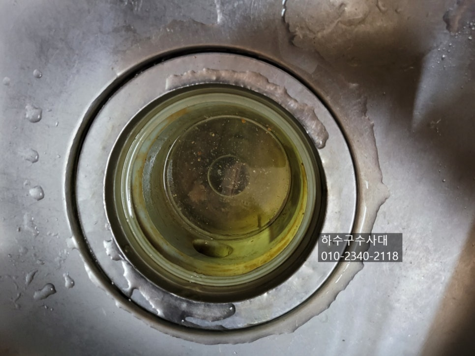
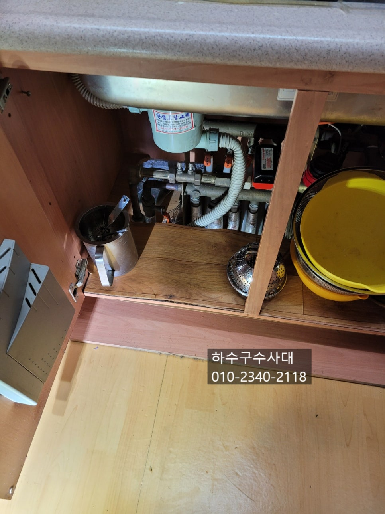
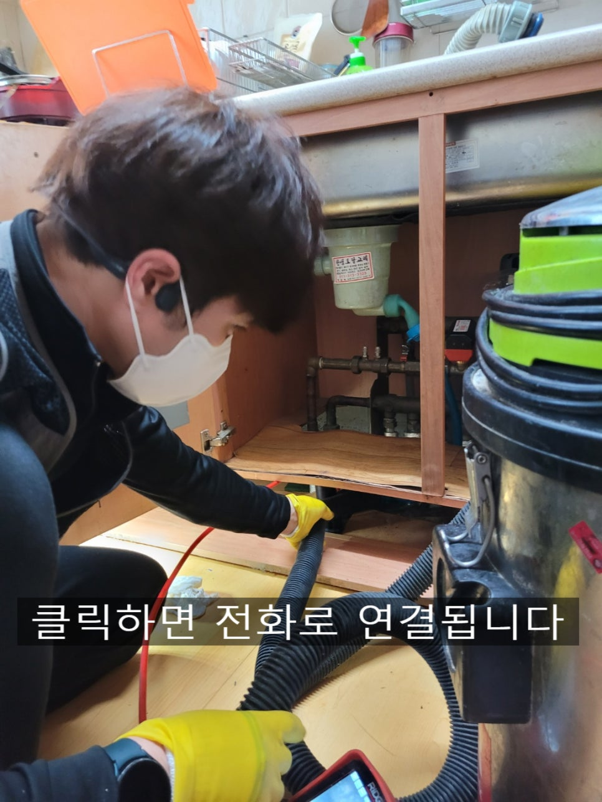
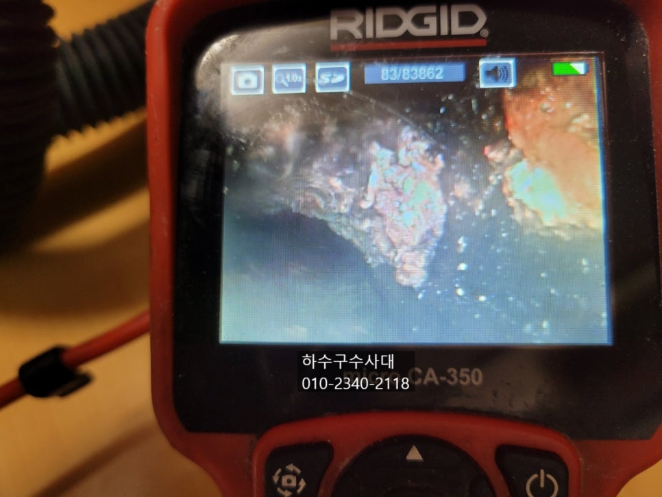
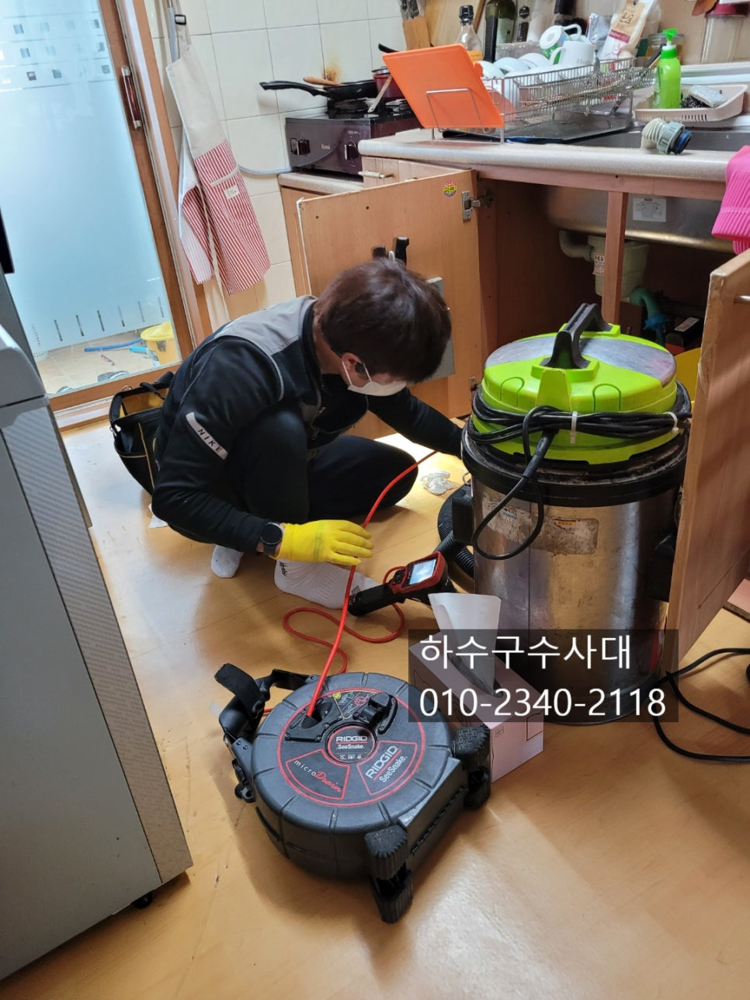
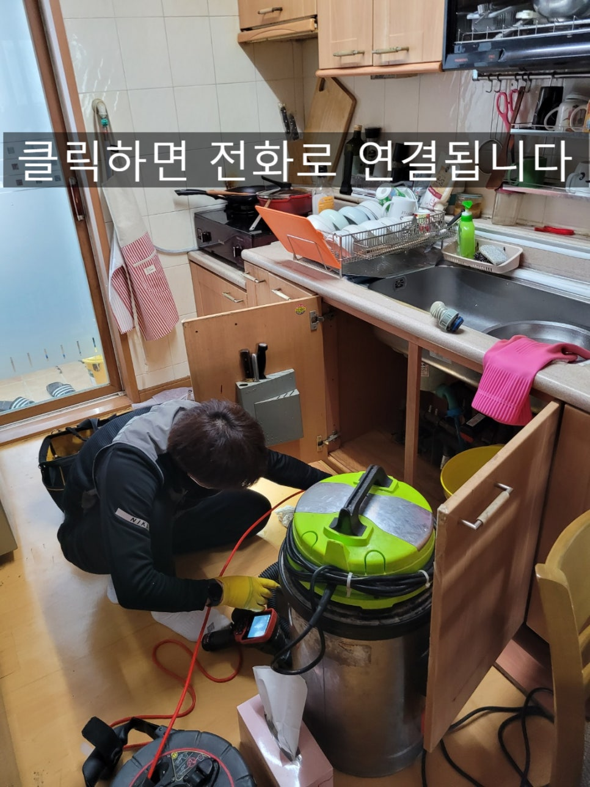
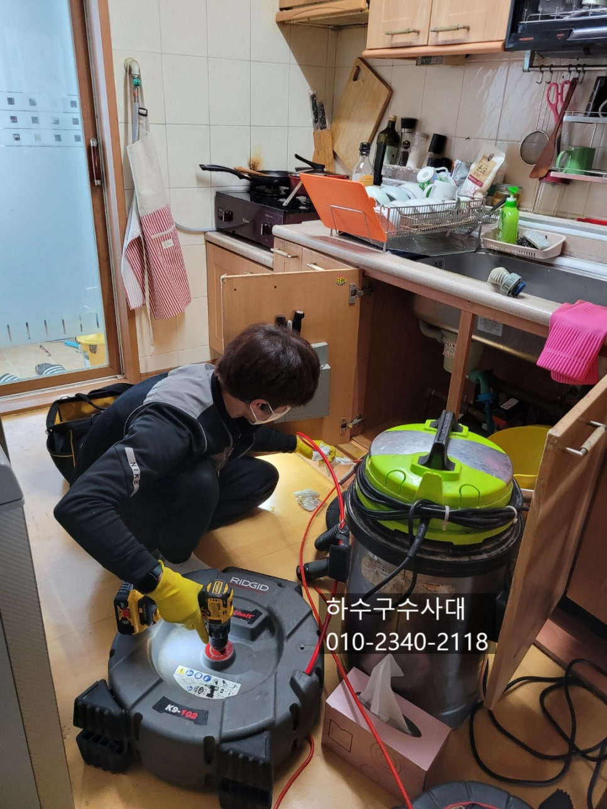

🏠 수지구하수구막힘 기흥구 처인구 싱크대막힘
용인 처인구 싱크대막힘 전문 시공 후기

📋 작업 개요
- 위치: 용인 처인구, 처인구, 용인
- 서비스 유형: 싱크대막힘, 하수구막힘, 배관막힘, 누수수리, 역류해결, 뚫는업체, 배관청소
- 작업 일시: 2022. 2. 10. 23:43
- 업체명: 하수구수사대 (010-5615-2118)
🔍 문제 상황
수지구하수구막힘 기흥구 처인구 싱크대막힘
안녕하세요
"하수구수사대"입니다.
싱크대에서 물을 사용하다가 언제부터인가
물 내려가는게 시원치 않은 경우가 생기는데요
호스에서 막히거나 배관에서 막히거나 여러가지
요인이 있지만 아무래도 고객님들 입장에서는
어디가 어떻게 막혔는지 몰라 부속품 교체를 해보기도
하신답니다.
오늘 문의를 주신 고객님께서도
배수통과 수전교체를 의뢰하셨는데요 상담을 하면서
교체이유를 여쭤보니 물이 잘 내려가지 않아서 였는데요
현장에 도착해보니 배수통과 호스는 오래되어 교체하기로
하였고 수전은 상태가 양호하기때문에 교체하지 않았습니다.
보통은 하수구배관이 막히게 되면 바닥으로 물이
역류하는게 대부분인데 호스와 배관주변을 잘 막아 놓았다면

🔎 원인 분석
💡 전문가 진단: 총알방문1년AS못뚫으면 빵원!
물이 새지않고 싱크대위로 올라와 천천히 내려가는
증상을 보인답니다.
호스를 하수구배관에서 빼낸뒤 내시경으로 상태를 확인해보니
배관깊숙히 기름때가 많이 껴있는것을 확인 할수가 있었습니다.
기름은 배관옆에서 위쪽으로 붙어 굳는데요
오랜기간 쌓이면 딱딱하게 굳어 막힘증상이 나타난답니다.
구멍이 좁아진상태에서 기름덩어리 일부분이 떨어져
좁은 구멍을 막게되면 물이 전혀 내려가지 않기도 한답니다.
싱크대배관을 뚫을때는 확실하게 내시경카메라로 확인하는
것이 중요해요. 싱크대하수구는 대부분 기름덩어리로
막히는 경우가 많기때문에 깨끗하게 제거하는것이 좋습니다.
배관구조와 길이가 다르고 기름덩어리가 딱딱한상태에 따라
작업방법도 달라진답니다^^
싱크대물이 역류하면 제일 걱정되는것은 아무래도
밑에집 누수인데요 싱크대밑에는 보일러 분배기가
있는데 그곳은 방수처리가 되지않아 물이 역류한다면

🔧 작업 과정
그쪽으로 물이 스며들어가 밑에집으로 누수가 되기도 한답니다.
누수가 되면 깐깐한 이웃들은 천장 벽지를 모두
바꿔달라고 하는 분들도 있으니 정말 조심해야해요ㅜㅜ
총알방문
1년AS
못뚫으면 빵원!
내시경카메라로 구조를 보니 엘보구간이 한번 있는데
이곳이 구배가 좋지않아 물이 고여있었답니다.
물이 고여있게되면 기름이 물위에 떠서 배관에 붙게되는데
이게 오랜기간 지나면 딱딱하게 굳게 되는 것이에요.
이를 방지하게 위해 한달에 한번쯤 펑크린을 부어주면
배관 옆에 조금씩 붙어있는 기름을 제거하면 딱딱하게
기름덩어리가 생길 염려는 없답니다^^
#배수통교체 도 하니 한결 깨끗해 졌습니다^^
배수통도 주기적으로 청소를 하지않으면 지져분해지고
악취가 나니 관리를 해주셔야해요.
작업이 마무리되면 항상 물을 받아서 내려보는데요
물이 잘내려가는지 싱크대호스 이음부분에서 누수는
없는지 체크를 해보는것입니다.
시원하게 뚫려있다면 소리부터가 틀리니 가끔씩 테스트
해보는것도 좋습니다^^
내시경카메라로 배관을 깨끗하게 청소를 하고 나니
전과 후의 차이가 엄청납니다.
이처럼 배관속 이물질은 역류와 악취로 이어지는데요
막히기 전에 펑크린 또는 뚜러펑으로 관리를 해주시는걸
추천드립니다.^^


✅ 작업 완료
저희 "하수구수사대"는 용인뿐만아니라
수도권 전지역에서 활동하고 있으니
하수구막힘으로 고민중이시라면
언제든지 연락바랍니다
하수구수사대
010-2340-2118
경기도 용인시 수지구 풍덕천로129번길 9 5층 590호




⚠️ 베란다 누수 및 방수 관리 방법
- ✅ 비가 많이 올 때 창틀 주변이나 아래층 천장에 얼룩이 생기는지 정기적으로 확인해 보세요.
- ✅ 우수관 주변 실리콘 마감이 들뜨거나 깨진 틈새가 있는지 손상 여부를 수시로 체크하세요.
- ✅ 베란다 바닥 타일의 줄눈(메지)이 소실되면 그 틈으로 물이 침투하여 누수가 유발됩니다.
- ✅ 누수 의심 증상 발견 시 방치하면 아래층 손실이 커지므로 즉시 전문가의 진단을 받으십시오.
💡 핵심 정리
- 확실한 장비 작업(내시경 점검 및 샤프트 스케일링)으로 원인을 뿌리 뽑습니다.
- 작업 후 1년 이내에 동일한 부위 재발 시 100% 무상 A/S 서비스를 보장합니다.
- 서울 · 경기 · 인천 전 지역에 24시간 언제든 긴급 출동할 수 있도록 항시 대기 중입니다.
❓ 자주 묻는 질문 (FAQ)
🚨 용인 처인구 싱크대막힘 문제로 고민이신가요?
정확한 원인 진단과 확실한 시공으로 재발 없는 해결을 약속드립니다.
24시간 긴급 출동 | 서울 · 경기 · 인천 전지역 | 1년 내 재발 시 무상 A/S